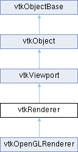

|
Etrek
|
|
Etrek
|
abstract specification for renderers More...
#include <vtkRenderer.h>

Public Member Functions | |
| vtkTypeMacro (vtkRenderer, vtkViewport) | |
| void | PrintSelf (ostream &os, vtkIndent indent) override |
| void | AddLight (vtkLight *) |
| void | RemoveLight (vtkLight *) |
| void | RemoveAllLights () |
| vtkLightCollection * | GetLights () |
| void | SetLightCollection (vtkLightCollection *lights) |
| void | CreateLight () |
| virtual vtkLight * | MakeLight () |
| virtual vtkTypeBool | UpdateLightsGeometryToFollowCamera () |
| vtkVolumeCollection * | GetVolumes () |
| vtkActorCollection * | GetActors () |
| void | SetActiveCamera (vtkCamera *) |
| vtkCamera * | GetActiveCamera () |
| virtual vtkCamera * | MakeCamera () |
| int | CaptureGL2PSSpecialProp (vtkProp *) |
| void | SetGL2PSSpecialPropCollection (vtkPropCollection *) |
| void | AddCuller (vtkCuller *) |
| void | RemoveCuller (vtkCuller *) |
| vtkCullerCollection * | GetCullers () |
| virtual double | GetTimeFactor () |
| virtual void | Render () |
| virtual void | DeviceRender () |
| virtual void | DeviceRenderOpaqueGeometry (vtkFrameBufferObjectBase *fbo=nullptr) |
| virtual void | DeviceRenderTranslucentPolygonalGeometry (vtkFrameBufferObjectBase *fbo=nullptr) |
| virtual void | ClearLights () |
| virtual void | Clear () |
| int | VisibleActorCount () |
| int | VisibleVolumeCount () |
| void | ComputeVisiblePropBounds (double bounds[6]) |
| double * | ComputeVisiblePropBounds () VTK_SIZEHINT(6) |
| virtual void | ResetCameraClippingRange () |
| virtual void | ResetCamera () |
| virtual void | ResetCamera (const double bounds[6]) |
| virtual void | ResetCamera (double xmin, double xmax, double ymin, double ymax, double zmin, double zmax) |
| virtual void | ResetCameraScreenSpace (double offsetRatio=0.9) |
| virtual void | ResetCameraScreenSpace (const double bounds[6], double offsetRatio=0.9) |
| vtkVector3d | DisplayToWorld (const vtkVector3d &display) |
| void | ZoomToBoxUsingViewAngle (const vtkRecti &box, double offsetRatio=1.0) |
| virtual void | ResetCameraScreenSpace (double xmin, double xmax, double ymin, double ymax, double zmin, double zmax, double offsetRatio=0.9) |
| vtkTypeBool | Transparent () |
| void | WorldToView () override |
| void | WorldToView (double &wx, double &wy, double &wz) override |
| double | GetZ (int x, int y) |
| vtkMTimeType | GetMTime () override |
| virtual void | StereoMidpoint () |
| double | GetTiledAspectRatio () |
| vtkTypeBool | IsActiveCameraCreated () |
| vtkSetMacro (UseDepthPeelingForVolumes, bool) | |
| vtkGetMacro (UseDepthPeelingForVolumes, bool) | |
| vtkBooleanMacro (UseDepthPeelingForVolumes, bool) | |
| virtual void | ReleaseGraphicsResources (vtkWindow *) |
| void | SetPass (vtkRenderPass *p) |
| vtkGetObjectMacro (Pass, vtkRenderPass) | |
| void | DisplayToWorld () |
| void | AddActor (vtkProp *p) |
| void | AddVolume (vtkProp *p) |
| void | RemoveActor (vtkProp *p) |
| void | RemoveVolume (vtkProp *p) |
| vtkGetMacro (TwoSidedLighting, vtkTypeBool) | |
| vtkSetMacro (TwoSidedLighting, vtkTypeBool) | |
| vtkBooleanMacro (TwoSidedLighting, vtkTypeBool) | |
| vtkSetMacro (LightFollowCamera, vtkTypeBool) | |
| vtkGetMacro (LightFollowCamera, vtkTypeBool) | |
| vtkBooleanMacro (LightFollowCamera, vtkTypeBool) | |
| vtkGetMacro (AutomaticLightCreation, vtkTypeBool) | |
| vtkSetMacro (AutomaticLightCreation, vtkTypeBool) | |
| vtkBooleanMacro (AutomaticLightCreation, vtkTypeBool) | |
| vtkSetMacro (Erase, vtkTypeBool) | |
| vtkGetMacro (Erase, vtkTypeBool) | |
| vtkBooleanMacro (Erase, vtkTypeBool) | |
| vtkSetMacro (Draw, vtkTypeBool) | |
| vtkGetMacro (Draw, vtkTypeBool) | |
| vtkBooleanMacro (Draw, vtkTypeBool) | |
| vtkSetVector3Macro (Ambient, double) | |
| vtkGetVectorMacro (Ambient, double, 3) | |
| vtkSetMacro (AllocatedRenderTime, double) | |
| virtual double | GetAllocatedRenderTime () |
| virtual void | ResetCameraClippingRange (const double bounds[6]) |
| virtual void | ResetCameraClippingRange (double xmin, double xmax, double ymin, double ymax, double zmin, double zmax) |
| vtkSetClampMacro (NearClippingPlaneTolerance, double, 0, 0.99) | |
| vtkGetMacro (NearClippingPlaneTolerance, double) | |
| vtkSetClampMacro (ClippingRangeExpansion, double, 0, 0.99) | |
| vtkGetMacro (ClippingRangeExpansion, double) | |
| void | SetRenderWindow (vtkRenderWindow *) |
| vtkRenderWindow * | GetRenderWindow () |
| vtkWindow * | GetVTKWindow () override |
| vtkSetMacro (BackingStore, vtkTypeBool) | |
| vtkGetMacro (BackingStore, vtkTypeBool) | |
| vtkBooleanMacro (BackingStore, vtkTypeBool) | |
| vtkSetMacro (Interactive, vtkTypeBool) | |
| vtkGetMacro (Interactive, vtkTypeBool) | |
| vtkBooleanMacro (Interactive, vtkTypeBool) | |
| virtual void | SetLayer (int layer) |
| vtkGetMacro (Layer, int) | |
| vtkGetMacro (PreserveColorBuffer, vtkTypeBool) | |
| vtkSetMacro (PreserveColorBuffer, vtkTypeBool) | |
| vtkBooleanMacro (PreserveColorBuffer, vtkTypeBool) | |
| vtkSetMacro (PreserveDepthBuffer, vtkTypeBool) | |
| vtkGetMacro (PreserveDepthBuffer, vtkTypeBool) | |
| vtkBooleanMacro (PreserveDepthBuffer, vtkTypeBool) | |
| void | ViewToWorld () override |
| void | ViewToWorld (double &wx, double &wy, double &wz) override |
| void | WorldToPose (double &wx, double &wy, double &wz) override |
| void | PoseToWorld (double &wx, double &wy, double &wz) override |
| void | ViewToPose (double &wx, double &wy, double &wz) override |
| void | PoseToView (double &wx, double &wy, double &wz) override |
| vtkSetMacro (SafeGetZ, bool) | |
| vtkGetMacro (SafeGetZ, bool) | |
| vtkBooleanMacro (SafeGetZ, bool) | |
| vtkGetMacro (LastRenderTimeInSeconds, double) | |
| vtkGetMacro (NumberOfPropsRendered, int) | |
| vtkAssemblyPath * | PickProp (double selectionX, double selectionY) override |
| vtkAssemblyPath * | PickProp (double selectionX1, double selectionY1, double selectionX2, double selectionY2) override |
| vtkAssemblyPath * | PickProp (double selectionX, double selectionY, int fieldAssociation, vtkSmartPointer< vtkSelection > selection) override |
| vtkAssemblyPath * | PickProp (double selectionX1, double selectionY1, double selectionX2, double selectionY2, int fieldAssociation, vtkSmartPointer< vtkSelection > selection) override |
| vtkSetMacro (UseDepthPeeling, vtkTypeBool) | |
| vtkGetMacro (UseDepthPeeling, vtkTypeBool) | |
| vtkBooleanMacro (UseDepthPeeling, vtkTypeBool) | |
| vtkSetClampMacro (OcclusionRatio, double, 0.0, 0.5) | |
| vtkGetMacro (OcclusionRatio, double) | |
| vtkSetMacro (MaximumNumberOfPeels, int) | |
| vtkGetMacro (MaximumNumberOfPeels, int) | |
| vtkGetMacro (LastRenderingUsedDepthPeeling, vtkTypeBool) | |
| vtkSetMacro (UseSSAO, bool) | |
| vtkGetMacro (UseSSAO, bool) | |
| vtkBooleanMacro (UseSSAO, bool) | |
| vtkSetMacro (SSAORadius, double) | |
| vtkGetMacro (SSAORadius, double) | |
| vtkSetMacro (SSAOBias, double) | |
| vtkGetMacro (SSAOBias, double) | |
| vtkSetMacro (SSAOKernelSize, unsigned int) | |
| vtkGetMacro (SSAOKernelSize, unsigned int) | |
| vtkSetMacro (SSAOBlur, bool) | |
| vtkGetMacro (SSAOBlur, bool) | |
| vtkBooleanMacro (SSAOBlur, bool) | |
| void | SetDelegate (vtkRendererDelegate *d) |
| vtkGetObjectMacro (Delegate, vtkRendererDelegate) | |
| vtkGetObjectMacro (Selector, vtkHardwareSelector) | |
| virtual void | SetLeftBackgroundTexture (vtkTexture *) |
| vtkTexture * | GetLeftBackgroundTexture () |
| virtual void | SetBackgroundTexture (vtkTexture *) |
| vtkGetObjectMacro (BackgroundTexture, vtkTexture) | |
| virtual void | SetRightBackgroundTexture (vtkTexture *) |
| vtkGetObjectMacro (RightBackgroundTexture, vtkTexture) | |
| vtkSetMacro (TexturedBackground, bool) | |
| vtkGetMacro (TexturedBackground, bool) | |
| vtkBooleanMacro (TexturedBackground, bool) | |
| vtkSetMacro (UseFXAA, bool) | |
| vtkGetMacro (UseFXAA, bool) | |
| vtkBooleanMacro (UseFXAA, bool) | |
| vtkGetObjectMacro (FXAAOptions, vtkFXAAOptions) | |
| virtual void | SetFXAAOptions (vtkFXAAOptions *) |
| vtkSetMacro (UseShadows, vtkTypeBool) | |
| vtkGetMacro (UseShadows, vtkTypeBool) | |
| vtkBooleanMacro (UseShadows, vtkTypeBool) | |
| vtkSetMacro (UseHiddenLineRemoval, vtkTypeBool) | |
| vtkGetMacro (UseHiddenLineRemoval, vtkTypeBool) | |
| vtkBooleanMacro (UseHiddenLineRemoval, vtkTypeBool) | |
| vtkGetObjectMacro (Information, vtkInformation) | |
| virtual void | SetInformation (vtkInformation *) |
| vtkSetMacro (UseImageBasedLighting, bool) | |
| vtkGetMacro (UseImageBasedLighting, bool) | |
| vtkBooleanMacro (UseImageBasedLighting, bool) | |
| vtkGetObjectMacro (EnvironmentTexture, vtkTexture) | |
| void | SetEnvironmentTextureProperty (vtkTexture *texture) |
| virtual void | SetEnvironmentTexture (vtkTexture *texture, bool isSRGB=false) |
| vtkGetVector3Macro (EnvironmentUp, double) | |
| vtkSetVector3Macro (EnvironmentUp, double) | |
| vtkGetVector3Macro (EnvironmentRight, double) | |
| vtkSetVector3Macro (EnvironmentRight, double) | |
| vtkSetMacro (UseOIT, bool) | |
| vtkGetMacro (UseOIT, bool) | |
| vtkBooleanMacro (UseOIT, bool) | |
| Public Member Functions inherited from vtkViewport | |
| vtkTypeMacro (vtkViewport, vtkObject) | |
| void | PrintSelf (ostream &os, vtkIndent indent) override |
| void | AddViewProp (vtkProp *) |
| vtkPropCollection * | GetViewProps () |
| vtkTypeBool | HasViewProp (vtkProp *) |
| void | RemoveViewProp (vtkProp *) |
| void | RemoveAllViewProps () |
| virtual double * | GetCenter () VTK_SIZEHINT(2) |
| virtual vtkTypeBool | IsInViewport (int x, int y) |
| virtual void | DisplayToView () |
| virtual void | ViewToDisplay () |
| void | DisplayToWorld () |
| void | WorldToDisplay () |
| void | WorldToDisplay (double &x, double &y, double &z) |
| vtkAssemblyPath * | PickPropFrom (double selectionX, double selectionY, vtkPropCollection *) |
| vtkAssemblyPath * | PickPropFrom (double selectionX1, double selectionY1, double selectionX2, double selectionY2, vtkPropCollection *) |
| vtkAssemblyPath * | PickPropFrom (double selectionX, double selectionY, vtkPropCollection *, int fieldAssociation, vtkSmartPointer< vtkSelection > selection) |
| vtkAssemblyPath * | PickPropFrom (double selectionX1, double selectionY1, double selectionX2, double selectionY2, vtkPropCollection *, int fieldAssociation, vtkSmartPointer< vtkSelection > selection) |
| virtual double | GetPickedZ () |
| void | AddActor2D (vtkProp *p) |
| void | RemoveActor2D (vtkProp *p) |
| vtkActor2DCollection * | GetActors2D () |
| vtkSetVector3Macro (Background, double) | |
| vtkGetVector3Macro (Background, double) | |
| vtkSetVector3Macro (Background2, double) | |
| vtkGetVector3Macro (Background2, double) | |
| vtkSetClampMacro (BackgroundAlpha, double, 0.0, 1.0) | |
| vtkGetMacro (BackgroundAlpha, double) | |
| vtkSetMacro (GradientBackground, bool) | |
| vtkGetMacro (GradientBackground, bool) | |
| vtkBooleanMacro (GradientBackground, bool) | |
| vtkSetMacro (DitherGradient, bool) | |
| vtkGetMacro (DitherGradient, bool) | |
| vtkBooleanMacro (DitherGradient, bool) | |
| vtkSetEnumMacro (GradientMode, GradientModes) | |
| vtkGetEnumMacro (GradientMode, GradientModes) | |
| vtkSetVector2Macro (Aspect, double) | |
| vtkGetVectorMacro (Aspect, double, 2) | |
| virtual void | ComputeAspect () |
| vtkSetVector2Macro (PixelAspect, double) | |
| vtkGetVectorMacro (PixelAspect, double, 2) | |
| vtkSetVector4Macro (Viewport, double) | |
| vtkGetVectorMacro (Viewport, double, 4) | |
| vtkSetVector3Macro (DisplayPoint, double) | |
| vtkGetVectorMacro (DisplayPoint, double, 3) | |
| vtkSetVector3Macro (ViewPoint, double) | |
| vtkGetVectorMacro (ViewPoint, double, 3) | |
| vtkSetVector4Macro (WorldPoint, double) | |
| vtkGetVectorMacro (WorldPoint, double, 4) | |
| virtual void | LocalDisplayToDisplay (double &x, double &y) |
| virtual void | DisplayToNormalizedDisplay (double &u, double &v) |
| virtual void | NormalizedDisplayToViewport (double &x, double &y) |
| virtual void | ViewportToNormalizedViewport (double &u, double &v) |
| virtual void | NormalizedViewportToView (double &x, double &y, double &z) |
| virtual void | DisplayToLocalDisplay (double &x, double &y) |
| virtual void | NormalizedDisplayToDisplay (double &u, double &v) |
| virtual void | ViewportToNormalizedDisplay (double &x, double &y) |
| virtual void | NormalizedViewportToViewport (double &u, double &v) |
| virtual void | ViewToNormalizedViewport (double &x, double &y, double &z) |
| virtual void | ViewToDisplay (double &x, double &y, double &z) |
| virtual int * | GetSize () VTK_SIZEHINT(2) |
| virtual int * | GetOrigin () VTK_SIZEHINT(2) |
| void | GetTiledSize (int *width, int *height) |
| virtual void | GetTiledSizeAndOrigin (int *width, int *height, int *lowerLeftX, int *lowerLeftY) |
| double | GetPickX () const |
| double | GetPickY () const |
| double | GetPickWidth () const |
| double | GetPickHeight () const |
| double | GetPickX1 () const |
| double | GetPickY1 () const |
| double | GetPickX2 () const |
| double | GetPickY2 () const |
| vtkGetObjectMacro (PickResultProps, vtkPropCollection) | |
| vtkSetVector3Macro (EnvironmentalBG, double) | |
| vtkGetVector3Macro (EnvironmentalBG, double) | |
| vtkSetVector3Macro (EnvironmentalBG2, double) | |
| vtkGetVector3Macro (EnvironmentalBG2, double) | |
| vtkSetMacro (GradientEnvironmentalBG, bool) | |
| vtkGetMacro (GradientEnvironmentalBG, bool) | |
| vtkBooleanMacro (GradientEnvironmentalBG, bool) | |
| Public Member Functions inherited from vtkObject | |
| vtkBaseTypeMacro (vtkObject, vtkObjectBase) | |
| virtual void | DebugOn () |
| virtual void | DebugOff () |
| bool | GetDebug () |
| void | SetDebug (bool debugFlag) |
| virtual void | Modified () |
| void | RemoveObserver (unsigned long tag) |
| void | RemoveObservers (unsigned long event) |
| void | RemoveObservers (const char *event) |
| void | RemoveAllObservers () |
| vtkTypeBool | HasObserver (unsigned long event) |
| vtkTypeBool | HasObserver (const char *event) |
| vtkTypeBool | InvokeEvent (unsigned long event) |
| vtkTypeBool | InvokeEvent (const char *event) |
| std::string | GetObjectDescription () const override |
| unsigned long | AddObserver (unsigned long event, vtkCommand *, float priority=0.0f) |
| unsigned long | AddObserver (const char *event, vtkCommand *, float priority=0.0f) |
| vtkCommand * | GetCommand (unsigned long tag) |
| void | RemoveObserver (vtkCommand *) |
| void | RemoveObservers (unsigned long event, vtkCommand *) |
| void | RemoveObservers (const char *event, vtkCommand *) |
| vtkTypeBool | HasObserver (unsigned long event, vtkCommand *) |
| vtkTypeBool | HasObserver (const char *event, vtkCommand *) |
| template<class U, class T> | |
| unsigned long | AddObserver (unsigned long event, U observer, void(T::*callback)(), float priority=0.0f) |
| template<class U, class T> | |
| unsigned long | AddObserver (unsigned long event, U observer, void(T::*callback)(vtkObject *, unsigned long, void *), float priority=0.0f) |
| template<class U, class T> | |
| unsigned long | AddObserver (unsigned long event, U observer, bool(T::*callback)(vtkObject *, unsigned long, void *), float priority=0.0f) |
| vtkTypeBool | InvokeEvent (unsigned long event, void *callData) |
| vtkTypeBool | InvokeEvent (const char *event, void *callData) |
| virtual void | SetObjectName (const std::string &objectName) |
| virtual std::string | GetObjectName () const |
| Public Member Functions inherited from vtkObjectBase | |
| const char * | GetClassName () const |
| virtual vtkTypeBool | IsA (const char *name) |
| virtual vtkIdType | GetNumberOfGenerationsFromBase (const char *name) |
| virtual void | Delete () |
| virtual void | FastDelete () |
| void | InitializeObjectBase () |
| void | Print (ostream &os) |
| void | Register (vtkObjectBase *o) |
| virtual void | UnRegister (vtkObjectBase *o) |
| int | GetReferenceCount () |
| void | SetReferenceCount (int) |
| bool | GetIsInMemkind () const |
| virtual void | PrintHeader (ostream &os, vtkIndent indent) |
| virtual void | PrintTrailer (ostream &os, vtkIndent indent) |
| virtual bool | UsesGarbageCollector () const |
Static Public Member Functions | |
| static vtkRenderer * | New () |
| Static Public Member Functions inherited from vtkObject | |
| static vtkObject * | New () |
| static void | BreakOnError () |
| static void | SetGlobalWarningDisplay (vtkTypeBool val) |
| static void | GlobalWarningDisplayOn () |
| static void | GlobalWarningDisplayOff () |
| static vtkTypeBool | GetGlobalWarningDisplay () |
| Static Public Member Functions inherited from vtkObjectBase | |
| static vtkTypeBool | IsTypeOf (const char *name) |
| static vtkIdType | GetNumberOfGenerationsFromBaseType (const char *name) |
| static vtkObjectBase * | New () |
| static void | SetMemkindDirectory (const char *directoryname) |
| static bool | GetUsingMemkind () |
Protected Member Functions | |
| virtual void | ExpandBounds (double bounds[6], vtkMatrix4x4 *matrix) |
| void | AllocateTime () |
| const std::array< double, 16 > & | GetCompositeProjectionTransformationMatrix () |
| const std::array< double, 16 > & | GetProjectionTransformationMatrix () |
| const std::array< double, 16 > & | GetViewTransformMatrix () |
| virtual int | UpdateGeometry (vtkFrameBufferObjectBase *fbo=nullptr) |
| virtual int | UpdateTranslucentPolygonalGeometry () |
| virtual int | UpdateOpaquePolygonalGeometry () |
| virtual int | UpdateCamera () |
| virtual vtkTypeBool | UpdateLightGeometry () |
| virtual int | UpdateLights () |
| vtkCamera * | GetActiveCameraAndResetIfCreated () |
| void | SetSelector (vtkHardwareSelector *selector) |
| Protected Member Functions inherited from vtkObject | |
| void | RegisterInternal (vtkObjectBase *, vtkTypeBool check) override |
| void | UnRegisterInternal (vtkObjectBase *, vtkTypeBool check) override |
| void | InternalGrabFocus (vtkCommand *mouseEvents, vtkCommand *keypressEvents=nullptr) |
| void | InternalReleaseFocus () |
| Protected Member Functions inherited from vtkObjectBase | |
| virtual void | ReportReferences (vtkGarbageCollector *) |
| vtkObjectBase (const vtkObjectBase &) | |
| void | operator= (const vtkObjectBase &) |
Protected Attributes | |
| vtkCamera * | ActiveCamera |
| vtkLight * | CreatedLight |
| vtkLightCollection * | Lights |
| vtkCullerCollection * | Cullers |
| vtkActorCollection * | Actors |
| vtkVolumeCollection * | Volumes |
| double | Ambient [3] |
| vtkRenderWindow * | RenderWindow |
| double | AllocatedRenderTime |
| double | TimeFactor |
| vtkTypeBool | TwoSidedLighting |
| vtkTypeBool | AutomaticLightCreation |
| vtkTypeBool | BackingStore |
| unsigned char * | BackingImage |
| int | BackingStoreSize [2] |
| vtkTimeStamp | RenderTime |
| double | LastRenderTimeInSeconds |
| vtkTypeBool | LightFollowCamera |
| int | NumberOfPropsRendered |
| vtkProp ** | PropArray |
| int | PropArrayCount |
| vtkTypeBool | Interactive |
| int | Layer |
| vtkTypeBool | PreserveColorBuffer |
| vtkTypeBool | PreserveDepthBuffer |
| double | ComputedVisiblePropBounds [6] |
| double | NearClippingPlaneTolerance |
| double | ClippingRangeExpansion |
| vtkTypeBool | Erase |
| vtkTypeBool | Draw |
| vtkPropCollection * | GL2PSSpecialPropCollection |
| bool | UseFXAA |
| vtkFXAAOptions * | FXAAOptions |
| vtkTypeBool | UseShadows |
| vtkTypeBool | UseHiddenLineRemoval |
| vtkTypeBool | UseDepthPeeling |
| bool | UseDepthPeelingForVolumes |
| double | OcclusionRatio |
| int | MaximumNumberOfPeels |
| bool | UseSSAO = false |
| double | SSAORadius = 0.5 |
| double | SSAOBias = 0.01 |
| unsigned int | SSAOKernelSize = 32 |
| bool | SSAOBlur = false |
| bool | UseOIT = true |
| vtkTypeBool | LastRenderingUsedDepthPeeling |
| vtkHardwareSelector * | Selector |
| vtkRendererDelegate * | Delegate |
| bool | TexturedBackground |
| vtkTexture * | BackgroundTexture |
| vtkTexture * | RightBackgroundTexture |
| vtkRenderPass * | Pass |
| vtkInformation * | Information |
| bool | UseImageBasedLighting |
| vtkTexture * | EnvironmentTexture |
| double | EnvironmentUp [3] |
| double | EnvironmentRight [3] |
| Protected Attributes inherited from vtkViewport | |
| vtkAssemblyPath * | PickedProp |
| vtkPropCollection * | PickFromProps |
| vtkPropCollection * | PickResultProps |
| double | PickX1 |
| double | PickY1 |
| double | PickX2 |
| double | PickY2 |
| double | PickedZ |
| vtkPropCollection * | Props |
| vtkActor2DCollection * | Actors2D |
| vtkWindow * | VTKWindow |
| double | Background [3] |
| double | Background2 [3] |
| double | BackgroundAlpha |
| double | Viewport [4] |
| double | Aspect [2] |
| double | PixelAspect [2] |
| double | Center [2] |
| bool | GradientBackground |
| bool | DitherGradient |
| GradientModes | GradientMode = GradientModes::VTK_GRADIENT_VERTICAL |
| double | EnvironmentalBG [3] |
| double | EnvironmentalBG2 [3] |
| bool | GradientEnvironmentalBG |
| int | Size [2] |
| int | Origin [2] |
| double | DisplayPoint [3] |
| double | ViewPoint [3] |
| double | WorldPoint [4] |
| Protected Attributes inherited from vtkObject | |
| bool | Debug |
| vtkTimeStamp | MTime |
| vtkSubjectHelper * | SubjectHelper |
| std::string | ObjectName |
| Protected Attributes inherited from vtkObjectBase | |
| std::atomic< int32_t > | ReferenceCount |
| vtkWeakPointerBase ** | WeakPointers |
Friends | |
| class | vtkHardwareSelector |
| class | vtkRendererDelegate |
| class | vtkRenderPass |
Additional Inherited Members | |
| Public Types inherited from vtkViewport | |
| enum class | GradientModes : int { VTK_GRADIENT_VERTICAL , VTK_GRADIENT_HORIZONTAL , VTK_GRADIENT_RADIAL_VIEWPORT_FARTHEST_SIDE , VTK_GRADIENT_RADIAL_VIEWPORT_FARTHEST_CORNER } |
| Static Protected Member Functions inherited from vtkObjectBase | |
| static vtkMallocingFunction | GetCurrentMallocFunction () |
| static vtkReallocingFunction | GetCurrentReallocFunction () |
| static vtkFreeingFunction | GetCurrentFreeFunction () |
| static vtkFreeingFunction | GetAlternateFreeFunction () |
abstract specification for renderers
vtkRenderer provides an abstract specification for renderers. A renderer is an object that controls the rendering process for objects. Rendering is the process of converting geometry, a specification for lights, and a camera view into an image. vtkRenderer also performs coordinate transformation between world coordinates, view coordinates (the computer graphics rendering coordinate system), and display coordinates (the actual screen coordinates on the display device). Certain advanced rendering features such as two-sided lighting can also be controlled.
| void vtkRenderer::AddActor | ( | vtkProp * | p | ) |
Add/Remove different types of props to the renderer. These methods are all synonyms to AddViewProp and RemoveViewProp. They are here for convenience and backwards compatibility.
| void vtkRenderer::AddCuller | ( | vtkCuller * | ) |
Add an culler to the list of cullers.
| void vtkRenderer::AddLight | ( | vtkLight * | ) |
Add a light to the list of lights.
| int vtkRenderer::CaptureGL2PSSpecialProp | ( | vtkProp * | ) |
This function is called to capture an instance of vtkProp that requires special handling during vtkRenderWindow::CaptureGL2PSSpecialProps().
|
inlinevirtual |
Clear the image to the background color.
Reimplemented in vtkOpenGLRenderer.
|
inlinevirtual |
Internal method temporarily removes lights before reloading them into graphics pipeline.
| double * vtkRenderer::ComputeVisiblePropBounds | ( | ) |
Wrapper-friendly version of ComputeVisiblePropBounds
| void vtkRenderer::ComputeVisiblePropBounds | ( | double | bounds[6] | ) |
Compute the bounding box of all the visible props Used in ResetCamera() and ResetCameraClippingRange()
| void vtkRenderer::CreateLight | ( | ) |
Create and add a light to renderer.
|
inlinevirtual |
Create an image. Subclasses of vtkRenderer must implement this method.
Reimplemented in vtkOpenGLRenderer.
|
virtual |
Render opaque polygonal geometry. Default implementation just calls UpdateOpaquePolygonalGeometry(). Subclasses of vtkRenderer that can deal with, e.g. hidden line removal must override this method.
Reimplemented in vtkOpenGLRenderer.
|
virtual |
Render translucent polygonal geometry. Default implementation just call UpdateTranslucentPolygonalGeometry(). Subclasses of vtkRenderer that can deal with depth peeling must override this method. If UseDepthPeeling and UseDepthPeelingForVolumes are true, volumetric data will be rendered here as well. It updates boolean ivar LastRenderingUsedDepthPeeling.
Reimplemented in vtkOpenGLRenderer.
|
inline |
Convert display (or screen) coordinates to world coordinates.
| vtkVector3d vtkRenderer::DisplayToWorld | ( | const vtkVector3d & | display | ) |
Convert a vtkVector3d from display space to world space.
| vtkCamera * vtkRenderer::GetActiveCamera | ( | ) |
Get the current camera. If there is not camera assigned to the renderer already, a new one is created automatically. This does not reset the camera.
|
protected |
Get the current camera and reset it only if it gets created automatically (see GetActiveCamera). This is only used internally.
| vtkActorCollection * vtkRenderer::GetActors | ( | ) |
Return any actors in this renderer.
|
protected |
Gets the ActiveCamera CompositeProjectionTransformationMatrix, only computing it if necessary. This function expects that this->ActiveCamera is not nullptr.
|
inline |
Return the collection of cullers.
Get the list of cullers for this renderer.
|
inline |
Return the collection of lights.
|
overridevirtual |
Return the MTime of the renderer also considering its ivars.
Reimplemented from vtkObject.
|
protected |
Gets the ActiveCamera ProjectionTransformationMatrix, only computing it if necessary. This function expects that this->ActiveCamera is not nullptr.
| double vtkRenderer::GetTiledAspectRatio | ( | ) |
Compute the aspect ratio of this renderer for the current tile. When tiled displays are used the aspect ratio of the renderer for a given tile may be different that the aspect ratio of the renderer when rendered in it entirety
|
virtual |
Get the ratio between allocated time and actual render time. TimeFactor has been taken out of the render process. It is still computed in case someone finds it useful. It may be taken away in the future.
|
protected |
Gets the ActiveCamera ViewTransformMatrix, only computing it if necessary. This function expects that this->ActiveCamera is not nullptr.
| vtkVolumeCollection * vtkRenderer::GetVolumes | ( | ) |
Return the collection of volumes.
|
overridevirtual |
Return the vtkWindow that owns this vtkViewport.
Implements vtkViewport.
| double vtkRenderer::GetZ | ( | int | x, |
| int | y ) |
Given a pixel location, return the Z value. The z value is normalized (0,1) between the front and back clipping planes. By default this functions accesses the vtkRenderWindow's depth buffer that is only valid right after this specific renderer has rendered. If SafeGetZ is On, this function will use a vtkHardwareSelector to get the depth information in flight. This approach always works, but takes more time as it invokes a render on the whole scene.
|
inline |
This method returns 1 if the ActiveCamera has already been set or automatically created by the renderer. It returns 0 if the ActiveCamera does not yet exist.
|
virtual |
Create a new Camera sutible for use with this type of Renderer. For example, a vtkMesaRenderer should create a vtkMesaCamera in this function. The default is to just call vtkCamera::New.
|
virtual |
Create a new Light sutible for use with this type of Renderer. For example, a vtkMesaRenderer should create a vtkMesaLight in this function. The default is to just call vtkLight::New.
|
static |
Create a vtkRenderer with a black background, a white ambient light, two-sided lighting turned on, a viewport of (0,0,1,1), and backface culling turned off.
|
inlineoverridevirtual |
Return the prop (via a vtkAssemblyPath) that has the highest z value at the given x, y position in the viewport. Basically, the top most prop that renders the pixel at selectionX, selectionY will be returned. If nothing was picked then NULL is returned. This method selects from the renderer's Prop list.
Implements vtkViewport.
|
inlineoverridevirtual |
Return the prop (via a vtkAssemblyPath) that has the highest z value at the given x, y position in the viewport. Basically, the top most prop that renders the pixel at selectionX, selectionY will be returned. If nothing was picked then NULL is returned. This method selects from the renderer's Prop list. Additionally, you can set the field association of the hardware selector used internally, and get its selection result by passing a non-null vtkSmartPointer<vtkSelection>. The picked prop is guaranteed to be the first node in the selection result.
Implements vtkViewport.
|
overridevirtual |
Return the Prop that has the highest z value at the given x1, y1 and x2,y2 positions in the viewport. Basically, the top most prop that renders the pixel at selectionX1, selectionY1, selectionX2, selectionY2 will be returned. If no Props are there NULL is returned. This method selects from the Viewports Prop list.
Implements vtkViewport.
|
overridevirtual |
Return the Prop that has the highest z value at the given x1, y1 and x2,y2 positions in the viewport. Basically, the top most prop that renders the pixel at selectionX1, selectionY1, selectionX2, selectionY2 will be returned. If no Props are there, NULL is returned. This method selects from the Viewports Prop list. Additionally, you can set the field association of the hardware selector used internally, and get its selection result by passing a non-null vtkSmartPointer<vtkSelection>.
Implements vtkViewport.
|
overridevirtual |
Reimplemented from vtkViewport.
|
overridevirtual |
Reimplemented from vtkViewport.
|
overridevirtual |
| void vtkRenderer::RemoveAllLights | ( | ) |
Remove all lights from the list of lights.
| void vtkRenderer::RemoveCuller | ( | vtkCuller * | ) |
Remove an actor from the list of cullers.
| void vtkRenderer::RemoveLight | ( | vtkLight * | ) |
Remove a light from the list of lights.
|
virtual |
CALLED BY vtkRenderWindow ONLY. End-user pass your way and call vtkRenderWindow::Render(). Create an image. This is a superclass method which will in turn call the DeviceRender method of Subclasses of vtkRenderer.
|
virtual |
Automatically set up the camera based on the visible actors. The camera will reposition itself to view the center point of the actors, and move along its initial view plane normal (i.e., vector defined from camera position to focal point) so that all of the actors can be seen.
|
virtual |
Automatically set up the camera based on a specified bounding box (xmin, xmax, ymin, ymax, zmin, zmax). Camera will reposition itself so that its focal point is the center of the bounding box, and adjust its distance and position to preserve its initial view plane normal (i.e., vector defined from camera position to focal point). Note: if the view plane is parallel to the view up axis, the view up axis will be reset to one of the three coordinate axes.
|
virtual |
Alternative version of ResetCamera(bounds[6]);
|
virtual |
Reset the camera clipping range based on the bounds of the visible actors. This ensures that no props are cut off
|
virtual |
Reset the camera clipping range based on a bounding box.
|
virtual |
Automatically set up the camera based on a specified bounding box (xmin, xmax, ymin, ymax, zmin, zmax). Use a screen space bounding box to zoom closer to the data.
OffsetRatio can be used to add a zoom offset. Default value is 0.9, which means that the camera will be 10% further from the data.
|
virtual |
Automatically set up the camera based on the visible actors. Use a screen space bounding box to zoom closer to the data.
OffsetRatio can be used to add a zoom offset. Default value is 0.9, which means that the camera will be 10% further from the data
|
virtual |
Alternative version of ResetCameraScreenSpace(bounds[6]);
OffsetRatio can be used to add a zoom offset. Default value is 0.9, which means that the camera will be 10% further from the data.
| void vtkRenderer::SetActiveCamera | ( | vtkCamera * | ) |
Specify the camera to use for this renderer.
| void vtkRenderer::SetDelegate | ( | vtkRendererDelegate * | d | ) |
Set/Get a custom Render call. Allows to hook a Render call from an external project.It will be used in place of vtkRenderer::Render() if it is not NULL and its Used ivar is set to true. Initial value is NULL.
|
virtual |
Reimplemented in vtkOpenGLRenderer.
| void vtkRenderer::SetGL2PSSpecialPropCollection | ( | vtkPropCollection * | ) |
Set the prop collection object used during vtkRenderWindow::CaptureGL2PSSpecialProps(). Do not call manually, this is handled automatically by the render window.
|
virtual |
Set/Get the layer that this renderer belongs to. This is only used if there are layered renderers.
Note: Changing the layer will update the PreserveColorBuffer setting. If the layer is 0, PreserveColorBuffer will be set to false, making the bottom renderer opaque. If the layer is non-zero, PreserveColorBuffer will be set to true, giving the renderer a transparent background. If other PreserveColorBuffer configurations are desired, they must be adjusted after the layer is set.
|
virtual |
Set/Get the texture to be used for the monocular or stereo left eye background. If set and enabled this gets the priority over the gradient background.
| void vtkRenderer::SetLightCollection | ( | vtkLightCollection * | lights | ) |
Set the collection of lights. We cannot name it SetLights because of TestSetGet
| void vtkRenderer::SetRenderWindow | ( | vtkRenderWindow * | ) |
Specify the rendering window in which to draw. This is automatically set when the renderer is created by MakeRenderer. The user probably shouldn't ever need to call this method.
|
virtual |
Set/Get the texture to be used for the right eye background. If set and enabled this gets the priority over the gradient background.
|
inlineprotected |
Called by vtkHardwareSelector when it begins rendering for selection.
|
inlinevirtual |
Do anything necessary between rendering the left and right viewpoints in a stereo render. Doesn't do anything except in the derived vtkIceTRenderer in ParaView.
| vtkTypeBool vtkRenderer::Transparent | ( | ) |
Returns a boolean indicating if this renderer is transparent. It is transparent if it is not in the deepest layer of its render window.
|
protectedvirtual |
Ask the active camera to do whatever it needs to do prior to rendering. Creates a camera if none found active.
|
protectedvirtual |
Ask all props to update and draw any opaque and translucent geometry. This includes both vtkActors and vtkVolumes Returns the number of props that rendered geometry.
Reimplemented in vtkOpenGLRenderer.
|
protectedvirtual |
Update the geometry of the lights in the scene that are not in world space (for instance, Headlights or CameraLights that are attached to the camera).
|
inlineprotectedvirtual |
Ask all lights to load themselves into rendering pipeline. This method will return the actual number of lights that were on.
Reimplemented in vtkOpenGLRenderer.
|
virtual |
Ask the lights in the scene that are not in world space (for instance, Headlights or CameraLights that are attached to the camera) to update their geometry to match the active camera.
|
protectedvirtual |
Ask all props to update and draw any opaque polygonal geometry. This includes both vtkActors and vtkVolumes Return the number of rendered props.
|
protectedvirtual |
Ask all props to update and draw any translucent polygonal geometry. This includes both vtkActors and vtkVolumes Return the number of rendered props. It is called once with alpha blending technique. It is called multiple times with depth peeling technique.
|
overridevirtual |
Reimplemented from vtkViewport.
|
overridevirtual |
Convert view point coordinates to world coordinates.
Reimplemented from vtkViewport.
|
overridevirtual |
Reimplemented from vtkViewport.
| int vtkRenderer::VisibleActorCount | ( | ) |
Returns the number of visible actors.
| int vtkRenderer::VisibleVolumeCount | ( | ) |
Returns the number of visible volumes.
| vtkRenderer::vtkGetMacro | ( | AutomaticLightCreation | , |
| vtkTypeBool | ) |
Turn on/off a flag which disables the automatic light creation capability. Normally in VTK if no lights are associated with the renderer, then a light is automatically created. However, in special circumstances this feature is undesirable, so the following boolean is provided to disable automatic light creation. (Turn AutomaticLightCreation off if you do not want lights to be created.)
| vtkRenderer::vtkGetMacro | ( | LastRenderingUsedDepthPeeling | , |
| vtkTypeBool | ) |
Tells if the last call to DeviceRenderTranslucentPolygonalGeometry() actually used depth peeling. Initial value is false.
| vtkRenderer::vtkGetMacro | ( | LastRenderTimeInSeconds | , |
| double | ) |
Get the time required, in seconds, for the last Render call.
| vtkRenderer::vtkGetMacro | ( | NumberOfPropsRendered | , |
| int | ) |
Should be used internally only during a render Get the number of props that were rendered using a RenderOpaqueGeometry or RenderTranslucentPolygonalGeometry call. This is used to know if something is in the frame buffer.
| vtkRenderer::vtkGetMacro | ( | PreserveColorBuffer | , |
| vtkTypeBool | ) |
By default, the renderer at layer 0 is opaque, and all non-zero layer renderers are transparent. This flag allows this behavior to be overridden. If true, this setting will force the renderer to preserve the existing color buffer regardless of layer. If false, it will always be cleared at the start of rendering.
This flag influences the Transparent() method, and is updated by calls to SetLayer(). For this reason it should only be set after changing the layer.
| vtkRenderer::vtkGetMacro | ( | TwoSidedLighting | , |
| vtkTypeBool | ) |
Turn on/off two-sided lighting of surfaces. If two-sided lighting is off, then only the side of the surface facing the light(s) will be lit, and the other side dark. If two-sided lighting on, both sides of the surface will be lit.
| vtkRenderer::vtkGetObjectMacro | ( | EnvironmentTexture | , |
| vtkTexture | ) |
Set/Get the environment texture used for image based lighting. This texture is supposed to represent the scene background.
| vtkRenderer::vtkGetObjectMacro | ( | FXAAOptions | , |
| vtkFXAAOptions | ) |
The configuration object for FXAA antialiasing.
| vtkRenderer::vtkGetObjectMacro | ( | Information | , |
| vtkInformation | ) |
Set/Get the information object associated with this algorithm.
| vtkRenderer::vtkGetObjectMacro | ( | Selector | , |
| vtkHardwareSelector | ) |
Get the current hardware selector. If the Selector is set, it implies the current render pass is for selection. Mappers/Properties may choose to behave differently when rendering for hardware selection.
| vtkRenderer::vtkGetVector3Macro | ( | EnvironmentRight | , |
| double | ) |
Set/Get the environment right vector.
| vtkRenderer::vtkGetVector3Macro | ( | EnvironmentUp | , |
| double | ) |
Set/Get the environment up vector.
| vtkRenderer::vtkSetClampMacro | ( | ClippingRangeExpansion | , |
| double | , | ||
| 0 | , | ||
| 0. | 99 ) |
Specify enlargement of bounds when resetting the camera clipping range. By default the range is not expanded by any percent of the (far - near) on the near and far sides
| vtkRenderer::vtkSetClampMacro | ( | NearClippingPlaneTolerance | , |
| double | , | ||
| 0 | , | ||
| 0. | 99 ) |
Specify tolerance for near clipping plane distance to the camera as a percentage of the far clipping plane distance. By default this will be set to 0.01 for 16 bit zbuffers and 0.001 for higher depth z buffers
| vtkRenderer::vtkSetClampMacro | ( | OcclusionRatio | , |
| double | , | ||
| 0. | 0, | ||
| 0. | 5 ) |
In case of use of depth peeling technique for rendering translucent material, define the threshold under which the algorithm stops to iterate over peel layers. This is the ratio of the number of pixels that have been touched by the last layer over the total number of pixels of the viewport area. Initial value is 0.0, meaning rendering have to be exact. Greater values may speed-up the rendering with small impact on the quality.
| vtkRenderer::vtkSetMacro | ( | AllocatedRenderTime | , |
| double | ) |
Set/Get the amount of time this renderer is allowed to spend rendering its scene. This is used by vtkLODActor's.
| vtkRenderer::vtkSetMacro | ( | BackingStore | , |
| vtkTypeBool | ) |
Turn on/off using backing store. This may cause the re-rendering time to be slightly slower when the view changes. But it is much faster when the image has not changed, such as during an expose event.
| vtkRenderer::vtkSetMacro | ( | Draw | , |
| vtkTypeBool | ) |
When this flag is off, render commands are ignored. It is used to either multiplex a vtkRenderWindow or render only part of a vtkRenderWindow. By default, Draw is on.
| vtkRenderer::vtkSetMacro | ( | Erase | , |
| vtkTypeBool | ) |
When this flag is off, the renderer will not erase the background or the Zbuffer. It is used to have overlapping renderers. Both the RenderWindow Erase and Render Erase must be on for the camera to clear the renderer. By default, Erase is on.
| vtkRenderer::vtkSetMacro | ( | Interactive | , |
| vtkTypeBool | ) |
Turn on/off interactive status. An interactive renderer is one that can receive events from an interactor. Should only be set if there are multiple renderers in the same section of the viewport.
| vtkRenderer::vtkSetMacro | ( | LightFollowCamera | , |
| vtkTypeBool | ) |
Turn on/off the automatic repositioning of lights as the camera moves. If LightFollowCamera is on, lights that are designated as Headlights or CameraLights will be adjusted to move with this renderer's camera. If LightFollowCamera is off, the lights will not be adjusted.
(Note: In previous versions of vtk, this light-tracking functionality was part of the interactors, not the renderer. For backwards compatibility, the older, more limited interactor behavior is enabled by default. To disable this mode, turn the interactor's LightFollowCamera flag OFF, and leave the renderer's LightFollowCamera flag ON.)
| vtkRenderer::vtkSetMacro | ( | MaximumNumberOfPeels | , |
| int | ) |
In case of depth peeling, define the maximum number of peeling layers. Initial value is 4. A special value of 0 means no maximum limit. It has to be a positive value.
| vtkRenderer::vtkSetMacro | ( | PreserveDepthBuffer | , |
| vtkTypeBool | ) |
By default, the depth buffer is reset for each renderer. If this flag is true, this renderer will use the existing depth buffer for its rendering.
| vtkRenderer::vtkSetMacro | ( | SafeGetZ | , |
| bool | ) |
If this flag is On GetZ(int, int) will use a vtkHardwareSelector internally to determine the Z value. Otherwise, it will use vtkRenderWindow::GetZbufferValue. See GetZ(int, int) documentation for more information. Default is off.
| vtkRenderer::vtkSetMacro | ( | SSAOBias | , |
| double | ) |
When using SSAO, define the bias when comparing samples. Default is 0.01
| vtkRenderer::vtkSetMacro | ( | SSAOBlur | , |
| bool | ) |
When using SSAO, define blurring of the ambient occlusion. Blurring can help to improve the result if samples number is low. Default is false
| vtkRenderer::vtkSetMacro | ( | SSAOKernelSize | , |
| unsigned int | ) |
When using SSAO, define the number of samples. Default is 32
| vtkRenderer::vtkSetMacro | ( | SSAORadius | , |
| double | ) |
When using SSAO, define the SSAO hemisphere radius. Default is 0.5
| vtkRenderer::vtkSetMacro | ( | TexturedBackground | , |
| bool | ) |
Set/Get whether this viewport should have a textured background. Default is off.
| vtkRenderer::vtkSetMacro | ( | UseDepthPeeling | , |
| vtkTypeBool | ) |
Turn on/off rendering of translucent material with depth peeling technique. The render window must have alpha bits (ie call SetAlphaBitPlanes(1)) and no multisample buffer (ie call SetMultiSamples(0) ) to support depth peeling. If UseDepthPeeling is on and the GPU supports it, depth peeling is used for rendering translucent materials. If UseDepthPeeling is off, alpha blending is used. Initial value is off.
| vtkRenderer::vtkSetMacro | ( | UseDepthPeelingForVolumes | , |
| bool | ) |
This flag is on and the GPU supports it, depth-peel volumes along with the translucent geometry. Only supported on OpenGL2 with dual-depth peeling. Default is false.
| vtkRenderer::vtkSetMacro | ( | UseFXAA | , |
| bool | ) |
Turn on/off FXAA anti-aliasing, if supported. Initial value is off.
| vtkRenderer::vtkSetMacro | ( | UseHiddenLineRemoval | , |
| vtkTypeBool | ) |
If this flag is true and the rendering engine supports it, wireframe geometry will be drawn using hidden line removal.
| vtkRenderer::vtkSetMacro | ( | UseImageBasedLighting | , |
| bool | ) |
If this flag is true and the rendering engine supports it, image based lighting is enabled and surface rendering displays environment reflections. Image Based Lighting rely on the environment texture to compute lighting if it has been provided.
| vtkRenderer::vtkSetMacro | ( | UseOIT | , |
| bool | ) |
If UseOIT is on and there are translucent props in the scene, the renderer will use the OrderIndependentTranslucentPass to render. If UseOIT is disabled, traditional depth sorting is used for translucency. By default, UseOIT is on.
| vtkRenderer::vtkSetMacro | ( | UseShadows | , |
| vtkTypeBool | ) |
Turn on/off rendering of shadows if supported Initial value is off.
| vtkRenderer::vtkSetMacro | ( | UseSSAO | , |
| bool | ) |
Enable or disable Screen Space Ambient Occlusion. SSAO darkens some pixels to improve depth perception.
| vtkRenderer::vtkSetVector3Macro | ( | Ambient | , |
| double | ) |
Set the intensity of ambient lighting.
|
overridevirtual |
Convert to from pose coordinates
Reimplemented from vtkViewport.
|
overridevirtual |
Convert world point coordinates to view coordinates.
Reimplemented from vtkViewport.
|
overridevirtual |
Convert world point coordinates to view coordinates.
Reimplemented from vtkViewport.
| void vtkRenderer::ZoomToBoxUsingViewAngle | ( | const vtkRecti & | box, |
| double | offsetRatio = 1.0 ) |
Automatically set up the camera focal point and zoom factor to observe the box in display coordinates. OffsetRatio can be used to add a zoom offset.
|
protected |
Specify enlargement of bounds when resetting the camera clipping range.
|
protected |
When this flag is off, render commands are ignored. It is used to either multiplex a vtkRenderWindow or render only part of a vtkRenderWindow. By default, Draw is on.
|
protected |
When this flag is off, the renderer will not erase the background or the Zbuffer. It is used to have overlapping renderers. Both the RenderWindow Erase and Render Erase must be on for the camera to clear the renderer. By default, Erase is on.
|
protected |
Holds the FXAA configuration.
|
protected |
Temporary collection used by vtkRenderWindow::CaptureGL2PSSpecialProps.
|
protected |
Tells if the last call to DeviceRenderTranslucentPolygonalGeometry() actually used depth peeling. Initial value is false.
|
protected |
In case of depth peeling, define the maximum number of peeling layers. Initial value is 4. A special value of 0 means no maximum limit. It has to be a positive value.
|
protected |
Specifies the minimum distance of the near clipping plane as a percentage of the far clipping plane distance. Values below this threshold are clipped to NearClippingPlaneTolerance*range[1]. Note that values which are too small may cause problems on systems with low z-buffer resolution.
|
protected |
In case of use of depth peeling technique for rendering translucent material, define the threshold under which the algorithm stops to iterate over peel layers. This is the ratio of the number of pixels that have been touched by the last layer over the total number of pixels of the viewport area. Initial value is 0.0, meaning rendering have to be exact. Greater values may speed-up the rendering with small impact on the quality.
|
protected |
If this flag is on and the GPU supports it, depth peeling is used for rendering translucent materials. If this flag is off, alpha blending is used. Initial value is off.
|
protected |
This flag is on and the GPU supports it, depth-peel volumes along with the translucent geometry. Default is false;
|
protected |
If this flag is on and the rendering engine supports it, FXAA will be used to antialias the scene. Default is off.
|
protected |
When this flag is on and the rendering engine supports it, wireframe polydata will be rendered using hidden line removal.
|
protected |
If UseOIT is on and there are translucent props in the scene, the renderer will use the OrderIndependentTranslucentPass to render. If UseOIT is disabled, traditional depth sorting is used for translucency. By default, UseOIT is on.
|
protected |
If this flag is on and the rendering engine supports it render shadows Initial value is off.